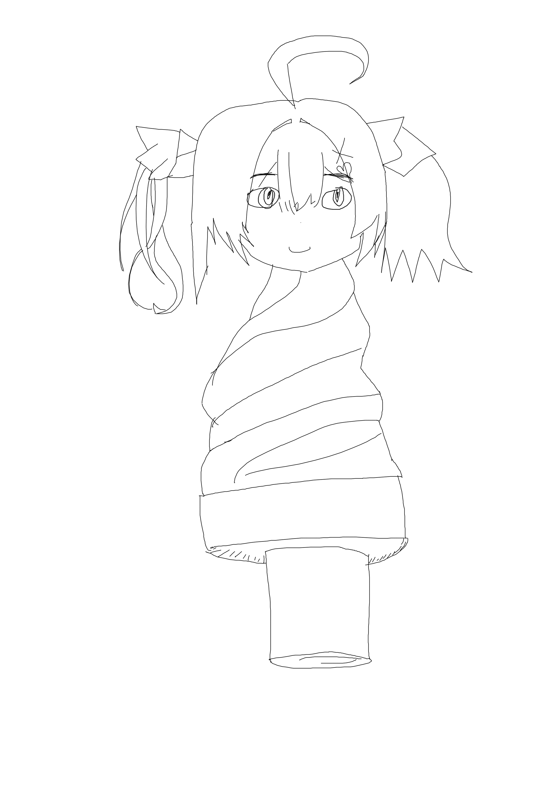

This is icecreamosa, she wants to work at an ice cream shop. Can you help her?

A recent anomaly in Hethereau has caused Lacrimosa to turn half into an ice cream, and members BAC concluded that she has to work at an ice cream shop run by anomalies in order to free her of her condition. As a member of the Eibon Antique Shop you must help her.